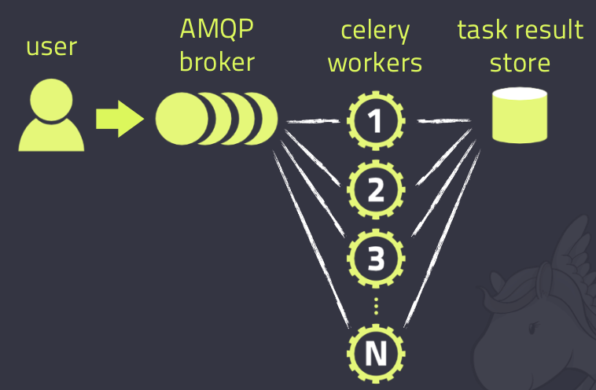

Celery 1.什么是Clelery Celery是一个简单、灵活且可靠的，处理大量消息的分布式系统
专注于实时处理的异步任务队列
同时也支持任务调度
Celery架构 
Celery的架构由三部分组成，消息中间件（message broker），任务执行单元（worker）和任务执行结果存储（task result store）组成。
消息中间件 Celery本身不提供消息服务，但是可以方便的和第三方提供的消息中间件集成。包括，RabbitMQ, Redis等等
任务执行单元 Worker是Celery提供的任务执行的单元，worker并发的运行在分布式的系统节点中。
任务结果存储 Task result store用来存储Worker执行的任务的结果，Celery支持以不同方式存储任务的结果，包括AMQP, redis等
版本支持情况 1 2 3 4 5 6 7 8 9 10 11 12 Celery version 4.0 runs on Python ❨2.7, 3.4, 3.5❩ PyPy ❨5.4, 5.5❩ This is the last version to support Python 2.7, and from the next version (Celery 5.x) Python 3.5 or newer is required. If you’re running an older version of Python, you need to be running an older version of Celery: Python 2.6: Celery series 3.1 or earlier. Python 2.5: Celery series 3.0 or earlier. Python 2.4 was Celery series 2.2 or earlier. Celery is a project with minimal funding, so we don’t support Microsoft Windows. Please don’t open any issues related to that platform.
2.使用场景 异步任务：将耗时操作任务提交给Celery去异步执行，比如发送短信/邮件、消息推送、音视频处理等等
定时任务：定时执行某件事情，比如每天数据统计
3.Celery的安装配置 pip install celery
消息中间件：RabbitMQ/Redis
app=Celery(‘任务名’，backend=’xxx’,broker=’xxx’)
4.Celery执行异步任务 基本使用 创建项目celerytest
创建py文件：celery_app_task.py
1 2 3 4 5 6 7 8 9 import celeryimport timebackend='redis://:123456@127.0.0.1:6379/1' broker='redis://:123456@127.0.0.1:6379/2' cel=celery.Celery('test' ,backend=backend,broker=broker) @cel.task def add (x,y ): return x+y
创建py文件：add_task.py,添加任务
1 2 3 from celery_app_task import addresult = add.delay(4 ,5 ) print (result.id )
创建py文件：run.py，执行任务，或者使用命令执行：celery worker -A celery_app_task -l info
注：windows下：celery worker -A celery_app_task -l info -P eventlet
1 2 3 4 from celery_app_task import celif __name__ == '__main__' : cel.worker_main()
创建py文件：result.py，查看任务执行结果
1 2 3 4 5 6 7 8 9 10 11 12 13 14 15 16 17 from celery.result import AsyncResultfrom celery_app_task import cel async = AsyncResult(id ="e919d97d-2938-4d0f-9265-fd8237dc2aa3" , app=cel) if async .successful(): result = async .get() print (result) elif async .failed(): print ('执行失败' ) elif async .status == 'PENDING' : print ('任务等待中被执行' ) elif async .status == 'RETRY' : print ('任务异常后正在重试' ) elif async .status == 'STARTED' : print ('任务已经开始被执行' )
执行 add_task.py，添加任务，并获取任务ID
执行 run.py ，或者执行命令：celery worker -A celery_app_task -l info
执行 result.py,检查任务状态并获取结果
多任务结构 1 2 3 4 5 6 7 pro_cel ├── celery_task │ ├── celery.py │ └── tasks1.py │ └── tasks2.py ├── check_result.py └── send_task.py
celery.py
1 2 3 4 5 6 7 8 9 10 11 12 13 14 from celery import Celery cel = Celery('celery_demo' , broker='redis://127.0.0.1:6379/1' , backend='redis://127.0.0.1:6379/2' , include=['celery_task.tasks1' , 'celery_task.tasks2' ]) cel.conf.timezone = 'Asia/Shanghai' cel.conf.enable_utc = False
tasks1.py
1 2 3 4 5 6 7 import timefrom celery_task.celery import cel @cel.task def test_celery (res ): time.sleep(5 ) return "test_celery任务结果:%s" %res
tasks2.py
1 2 3 4 5 6 import timefrom celery_task.celery import cel@cel.task def test_celery2 (res ): time.sleep(5 ) return "test_celery2任务结果:%s" %res
check_result.py
1 2 3 4 5 6 7 8 9 10 11 12 13 14 15 16 17 18 19 from celery.result import AsyncResultfrom celery_task.celery import cel async = AsyncResult(id ="08eb2778-24e1-44e4-a54b-56990b3519ef" , app=cel) if async .successful(): result = async .get() print (result) elif async .failed(): print ('执行失败' ) elif async .status == 'PENDING' : print ('任务等待中被执行' ) elif async .status == 'RETRY' : print ('任务异常后正在重试' ) elif async .status == 'STARTED' : print ('任务已经开始被执行' )
send_task.py
1 2 3 4 5 6 7 8 from celery_task.tasks1 import test_celeryfrom celery_task.tasks2 import test_celery2 result = test_celery.delay('第一个的执行' ) print (result.id )result = test_celery2.delay('第二个的执行' ) print (result.id )
添加任务（执行send_task.py），开启work：celery worker -A celery_task -l info -P eventlet，检查任务执行结果（执行check_result.py）
5.Celery执行定时任务 设定时间让celery执行一个任务 add_task.py
1 2 3 4 5 6 7 8 9 10 11 12 13 14 15 16 17 18 19 20 21 22 from celery_app_task import addfrom datetime import datetime ctime = datetime.now() utc_ctime = datetime.utcfromtimestamp(ctime.timestamp()) from datetime import timedeltatime_delay = timedelta(seconds=10 ) task_time = utc_ctime + time_delay result = add.apply_async(args=[4 , 3 ], eta=task_time) print (result.id )
类似于contab的定时任务 多任务结构中celery.py修改如下
1 2 3 4 5 6 7 8 9 10 11 12 13 14 15 16 17 18 19 20 21 22 23 24 25 26 27 28 29 30 31 from datetime import timedeltafrom celery import Celeryfrom celery.schedules import crontab cel = Celery('tasks' , broker='redis://127.0.0.1:6379/1' , backend='redis://127.0.0.1:6379/2' , include=[ 'celery_task.tasks1' , 'celery_task.tasks2' , ]) cel.conf.timezone = 'Asia/Shanghai' cel.conf.enable_utc = False cel.conf.beat_schedule = { 'add-every-10-seconds' : { 'task' : 'celery_task.tasks1.test_celery' , 'schedule' : timedelta(seconds=2 ), 'args' : ('test' ,) }, }
启动一个beat：celery beat -A celery_task -l info
启动work执行：celery worker -A celery_task -l info -P eventlet
6.Django中使用Celery 在项目目录下创建celeryconfig.py
1 2 3 4 5 6 7 8 9 10 11 12 13 14 15 import djcelerydjcelery.setup_loader() CELERY_IMPORTS=( 'app01.tasks' , ) CELERYD_FORCE_EXECV=True CELERYD_CONCURRENCY=4 CELERY_ACKS_LATE=True CELERYD_MAX_TASKS_PER_CHILD=100 CELERYD_TASK_TIME_LIMIT=12 *30
在app01目录下创建tasks.py
1 2 3 4 5 6 from celery import task@task def add (a,b ): with open ('a.text' , 'a' , encoding='utf-8' ) as f: f.write('a' ) print (a+b)
视图函数views.py
1 2 3 4 5 6 7 8 9 10 11 12 13 14 from django.shortcuts import render,HttpResponsefrom app01.tasks import addfrom datetime import datetimedef test (request ): ctime = datetime.now() utc_ctime = datetime.utcfromtimestamp(ctime.timestamp()) from datetime import timedelta time_delay = timedelta(seconds=5 ) task_time = utc_ctime + time_delay result = add.apply_async(args=[4 , 3 ], eta=task_time) print (result.id ) return HttpResponse('ok' )
settings.py
1 2 3 4 5 6 7 8 9 10 11 12 13 INSTALLED_APPS = [ ... 'djcelery' , 'app01' ] ... from djagocele import celeryconfigBROKER_BACKEND='redis' BOOKER_URL='redis://127.0.0.1:6379/1' CELERY_RESULT_BACKEND='redis://127.0.0.1:6379/2'
 微信
微信 支付宝
支付宝